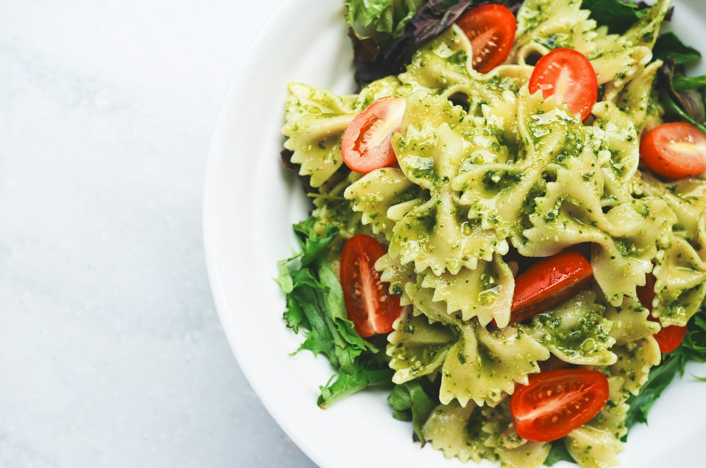

Paola Ferraro
Chef e sócia
Terceira geração da família. Formada em gastronomia em Bolonha, voltou para assumir a cozinha em 2015.

Desde 1974 · Bela Vista, São Paulo
Ingredientes de pequenos produtores, pratos para dividir e uma carta de vinhos curta, escolhida garrafa por garrafa.
Além do salão, a cozinha atende eventos, encomendas e entregas no bairro.
De terça a domingo, com pratos do dia e menu executivo nos dias úteis.
Cardápio completo, carta de vinhos e sobremesas feitas na casa.
Aniversários, confraternizações e jantares de empresa em salão reservado.
Massas frescas, molhos e sobremesas para levar, com um dia de antecedência.
Pedidos pelo WhatsApp, com entrega própria em um raio de cinco quilômetros.
Jantar para dois com entrada, prato, sobremesa e vinho.

“Massa fresca, molho de panela e mesa farta”
A cozinha e o salão são tocados pela família, com uma equipe que está na casa há mais de dez anos.
Chef e sócia
Terceira geração da família. Formada em gastronomia em Bolonha, voltou para assumir a cozinha em 2015.

Salão e adega
Cuida do atendimento e da carta de vinhos, que troca a cada estação.

Mestre do forno
Há vinte e dois anos na casa. É dele o pão que chega à mesa.
Os pratos servem bem uma pessoa. Meia porção disponível para as massas.
Às sextas, sábados e domingos recomendamos reservar. Nos outros dias, costuma haver mesa na hora.
Sim. Há entradas, massas e um prato principal sem carne, e adaptamos outros a pedido.
Pode. Cobramos taxa de rolha de R$ 60 por garrafa.
Temos um salão reservado para até quarenta pessoas. Fale com a gente com dois dias de antecedência.
Respondemos em poucos minutos. Para grupos acima de dez pessoas, fale com a gente com dois dias de antecedência.
Rua Treze de Maio, 1.208 — Bela Vista, São Paulo